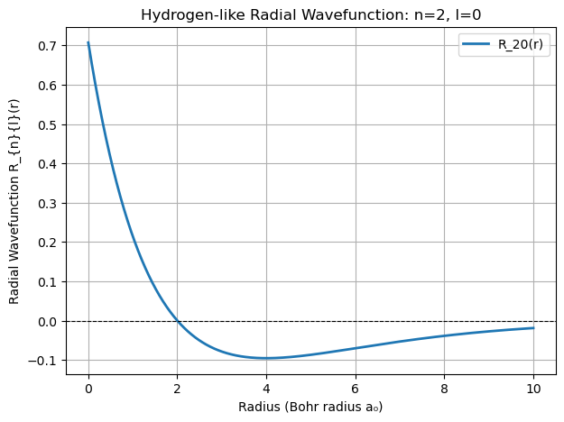

Quantum Mechanics and Atomic Structure#
1. Introduction to Quantum Mechanics#
Quantum mechanics is a fundamental theory in physics that describes the behavior of matter and energy at atomic and subatomic scales. Classical mechanics fails to explain many phenomena observed in microscopic systems, such as the stability of atoms and the discrete energy levels of electrons.
In quantum mechanics, the wavefunction (Ψ) represents the state of a quantum system, and its square (|Ψ|²) gives the probability of finding a particle in a given region of space. The behavior of the wavefunction is governed by the Schrödinger equation, which determines the allowed energy levels of quantum systems.
2. The Role of the Hamiltonian Operator#
The Hamiltonian operator \(\hat{H}\) represents the total energy of a quantum system. It consists of kinetic and potential energy terms:
where:
\(\hat{H} \) is the Hamiltonian operator,
\( E \) is the total energy of the system,
\( \Psi \) is the wavefunction.
The Hamiltonian depends on the system being studied. In the case of an electron in an atom, the potential energy comes from the Coulomb attraction between the negatively charged electron and the positively charged nucleus.
3. The One-Dimensional (1D) Box Problem#
One of the simplest quantum mechanical models is the particle in a one-dimensional box, where a particle is confined to move in a region with impenetrable walls. The wavefunction solutions are standing waves, and the allowed energy levels are quantized:
where:
\( n \) is a positive integer (quantum number),
\( h \) is Planck’s constant,
\( m \) is the mass of the particle,
\( L \) is the length of the box.
This quantization of energy is a fundamental feature of quantum systems.
4. Quantum Numbers and Electron Configurations#
In three-dimensional quantum systems, such as atoms, the position of an electron is best described in spherical coordinates (r, θ, ϕ). The quantum numbers that arise from solving the Schrödinger equation in this system determine the electron’s allowed states.
Principal Quantum Number (n)#
Symbol:
nValues:
1, 2, 3, ...Represents the energy level and size of the orbital.
Higher values of
ncorrespond to orbitals that are farther from the nucleus.
Orbital Quantum Number (l)#
Symbol:
lValues:
0, 1, 2, ..., (n-1)Defines the shape of the orbital.
Corresponds to different orbital types:
l = 0→ s-orbital (spherical)l = 1→ p-orbital (dumbbell-shaped)l = 2→ d-orbital (cloverleaf-shaped)l = 3→ f-orbital (complex shape)
Magnetic Quantum Number (m)#
Symbol:
mValues:
-l, ..., 0, ..., +lDetermines the orientation of the orbital in space.
Spin Quantum Number (s)#
Symbol:
sValues:
+½(spin-up) or-½(spin-down)Represents the intrinsic angular momentum (spin) of the electron.
Electrons in the same orbital must have opposite spins due to the Pauli Exclusion Principle.
5. Atomic Orbitals and Their Shapes#
The solutions to the Schrödinger equation for an electron confined in a spherical potential define the atomic orbitals. These orbitals describe the probability of finding an electron in different regions of space around the nucleus.
s-orbitals (
l = 0): Spherical in shape, centered around the nucleus.p-orbitals (
l = 1): Dumbbell-shaped, oriented along the x, y, and z axes.d-orbitals (
l = 2): More complex shapes, often resembling cloverleaves.f-orbitals (
l = 3): Even more intricate shapes, important in heavy elements.
These orbitals do not describe the path of an electron but rather the regions where the electron is most likely to be found.
import numpy as np
import math
import matplotlib.pyplot as plt
from scipy.special import genlaguerre
def radial_wavefunction(n, l, r, a0=1):
"""
Computes the radial wavefunction R_{n,l}(r) for hydrogen-like atoms.
"""
rho = 2 * r / (n * a0)
normalization = np.sqrt((2 / (n * a0))**3 * math.factorial(n - l - 1) / (2 * n * math.factorial(n + l)))
laguerre_poly = genlaguerre(n - l - 1, 2 * l + 1)(rho)
return normalization * np.exp(-rho / 2) * rho**l * laguerre_poly
def plot_radial_wavefunction(n, l):
"""Plots the radial wavefunction R_{n,l}(r)."""
# Make sure l<n etc.
if l>=n:
l=n-1
if n<1:
n=1
if l<0:
l=0
r = np.linspace(0, 10, 1000) # Radius values in units of Bohr radius
R_nl = radial_wavefunction(n, l, r)
plt.figure(figsize=(7, 5))
plt.plot(r, R_nl, label=f"R_{n}{l}(r)", linewidth=2)
plt.axhline(0, color='black', linestyle='--', linewidth=0.8)
plt.xlabel("Radius (Bohr radius a₀)")
plt.ylabel("Radial Wavefunction R_{n}{l}(r)")
plt.title(f"Hydrogen-like Radial Wavefunction: n={n}, l={l}")
plt.legend()
plt.grid()
plt.show()
# Plot wavefunctions separately
n=2
l=0
plot_radial_wavefunction(n, l)

6. Quantized Angular Momentum: Bohr Model vs. Quantum Mechanics#
Bohr Model and Its Assumptions#
In the Bohr model:
Electrons move in fixed circular orbits around the nucleus.
The angular momentum of an electron in orbit is quantized according to the equation:
\[L = n \hbar \]\(\hbar \) is the reduced Planck’s constant \( h/2\pi\),
Quantum Mechanical Angular Momentum#
The orbital angular momentum in quantum mechanics is given by:
where:
\(L\) is the magnitude of the angular momentum,
\( l\) is the orbital quantum number \(( l = 0, 1, 2, ..., n-1 )\).
Why the Bohr Model Was Incorrect#
Fails for Multi-Electron Atoms
Electrons Are Not Classical Particles
Orbital Angular Momentum in the Ground State:
The Bohr model predicts nonzero angular momentum for
n = 1.Quantum mechanics predicts
L = 0forn = 1, l = 0.
Electron Motion is Defined by Wavefunctions.
7. Electron Spin and the Pauli Exclusion Principle#
In addition to orbital angular momentum, electrons have an intrinsic angular momentum, known as spin. The concept of spin was first introduced by Paul Dirac through a relativistic interpretation of quantum mechanics.
Spin quantum number (
s): Takes values of+½or-½.The Stern-Gerlach experiment (1922) provided experimental evidence for electron spin.
The Pauli Exclusion Principle, formulated by Wolfgang Pauli, states:
No two fermions (such as electrons) can occupy the same quantum state simultaneously.
Fermions vs. Bosons#
Fermions (e.g., electrons, neutrons, protons) obey the Pauli Exclusion Principle and have half-integer spin (
±½).Bosons (e.g., photons, gluons) do not obey the exclusion principle and have integer spin (
1, 2, ...).
8. E.C. Stoner’s Role in the Pauli Exclusion Principle#
Edmund Clifton Stoner was a British physicist who made significant contributions to atomic and quantum theory. He was based here at the University of Leeds, where his research on magnetism and electron configurations led him to explore the structure of atoms. His work in 1924 directly influenced Wolfgang Pauli’s formulation of the Pauli exclusion principle. Note that there is a building named after him.
8.1 Background: Research on Magnetism at Leeds#
Stoner’s early work focused on magnetism, particularly the study of the magnetic properties of materials.
He investigated the relationship between electron spin and magnetization, which naturally led him to study the behavior of electrons within atoms.
This research directed his attention to the quantum states of electrons in atoms, setting the stage for his groundbreaking insights into electron configurations.
8.2 Electron Configurations and Energy Levels#
While studying the distribution of electrons in atomic shells, Stoner introduced the idea that the number of electron states in a given energy level is determined by **both the principal quantum number n and the total angular momentum quantum number j.
This approach provided a new way to quantify electron arrangements, particularly in multi-electron atoms.
8.3 Derivation of Electron States (1924)#
In 1924, Stoner published a paper titled “The Distribution of Electrons among Atomic Levels” in the Philosophical Magazine.
He derived the rule that for a given energy level n, the maximum number of electrons that can occupy it is:
\[2(2l + 1)\]where \(l\) is the orbital angular momentum quantum number.
This rule helped explain the periodic structure of elements and was a crucial step in the development of quantum mechanics.
8.4 Influence on Pauli (1925)#
Pauli built upon Stoner’s work and extended it to formulate the Pauli exclusion principle, stating that no two electrons in an atom can have the same set of quantum numbers.
Pauli later introduced electron spin, a concept that was experimentally confirmed, and incorporated the spin quantum number, s) into his exclusion rule.
Stoner’s research on magnetism and electron states at the University of Leeds was foundational in shaping the understanding of atomic structure. His insights into electron energy levels, particularly his 1924 publication, directly influenced Pauli’s exclusion principle, making his work a vital precursor to modern quantum mechanics.
Reference:
Stoner, E. C. (1924). The Distribution of Electrons among Atomic Levels. Philosophical Magazine, Series 6, Volume 48, No. 286, pp. 719–736. Link to paper
8. Summary#
Quantum mechanics describes particles using wavefunctions governed by the Schrödinger equation.
Quantum numbers (
n, l, m, s) define the allowed energy states and spatial distribution of electrons.Atomic orbitals determine where electrons are likely to be found.
Electrons have both orbital and intrinsic angular momentum (spin).
The Pauli Exclusion Principle dictates electron configurations in atoms.
These principles are fundamental to understanding atomic structure, chemical bonding, and nanotechnology applications.